Префектура Хоккайдо · Обихиро · онсэн и сауна
Хоккайдо отель в Обихиро: своя сауна в номере и редкий торфяной онсэн
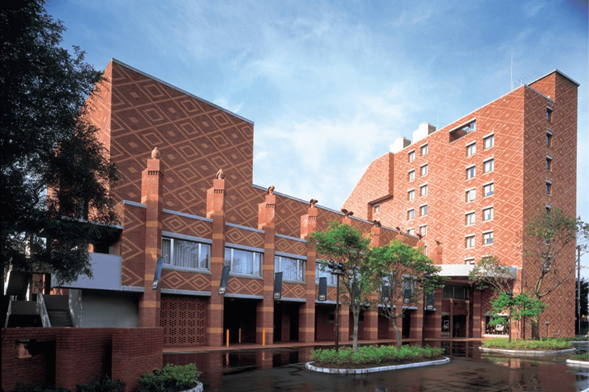
Обихиро стоит посреди равнины Токати, которую называют сельскохозяйственным королевством Японии. Здесь, в отеле с вековой историей, можно попариться в сауне прямо в номере, а потом окунуться в торфяной онсэн, каких в мире почти нет.
Отель
С Токати для всего Хоккайдо
«Мори-но спа ризорт Хоккайдо отель», то есть «Лесной спа-курорт Хоккайдо отель», носит имя всего острова не случайно. Его создатели из Токати с самого начала хотели, чтобы он стал главным отелем Хоккайдо.
Ради этого здесь собрали сильную команду: профессионального сомелье и одних из лучших на Хоккайдо поваров японской и европейской кухни. Токати славится фермами, и кухня отеля придумывает новые блюда из местных продуктов, чтобы поддерживать округу. В отделке много монгольского дуба, кирпича и других материалов с Хоккайдо и из самого Токати, поэтому в интерьерах тепло и уютно. А в отеле есть свой мор-онсэн, редкий в мировом масштабе источник.
История
120 лет вместе с Токати
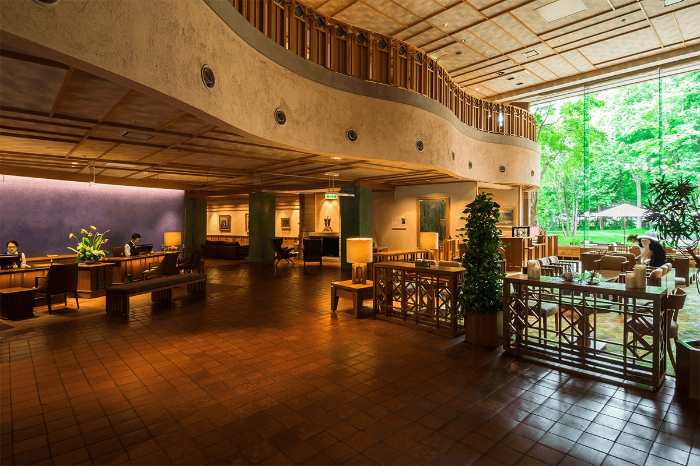
История отеля началась в 1899 году с гостиницы «Хоккайкан». Когда в Обихиро пришла железная дорога, она работала у вокзала, а в 1966 году переехала туда, где стоит и сегодня.
В 1991 году гостиница вошла в группу местной газеты «Токати Майнити Симбун», а в 1994 году получила нынешнее имя «Хоккайдо отель». После перестроек 1995 и 2001 годов здание приобрело свой нынешний вид. В 2015 году, к двадцатилетию нового корпуса, отель обновили ещё раз и превратили в «Лесной спа-курорт». Получается, что он прошёл весь путь вместе с Токати.
Номер
Сауна-твин «Тотоноэ»: своя сауна в скандинавском стиле
В 2020 году номера с собственной сауной в Японии были редкостью. В сауна-твине «Тотоноэ» можно париться всей семьёй или вдвоём. Внутри сауны висит украшение из листьев берёзы из Токати, и воздух наполнен берёзовым ароматом, который помогает расслабиться.
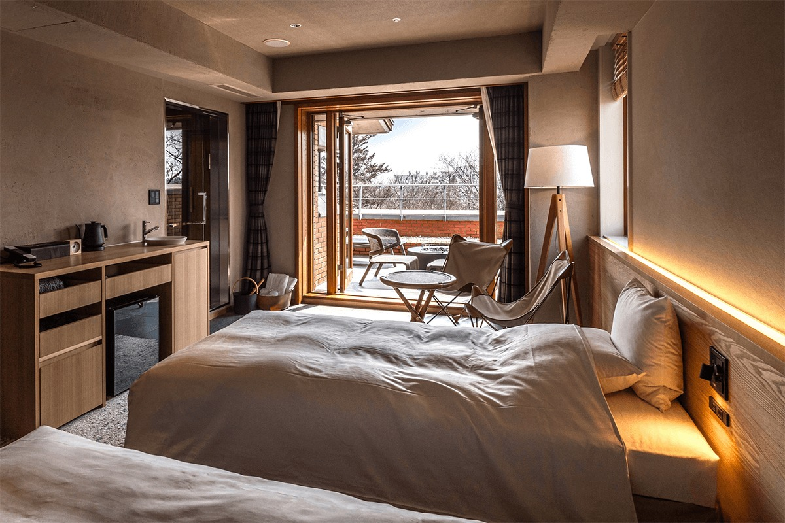
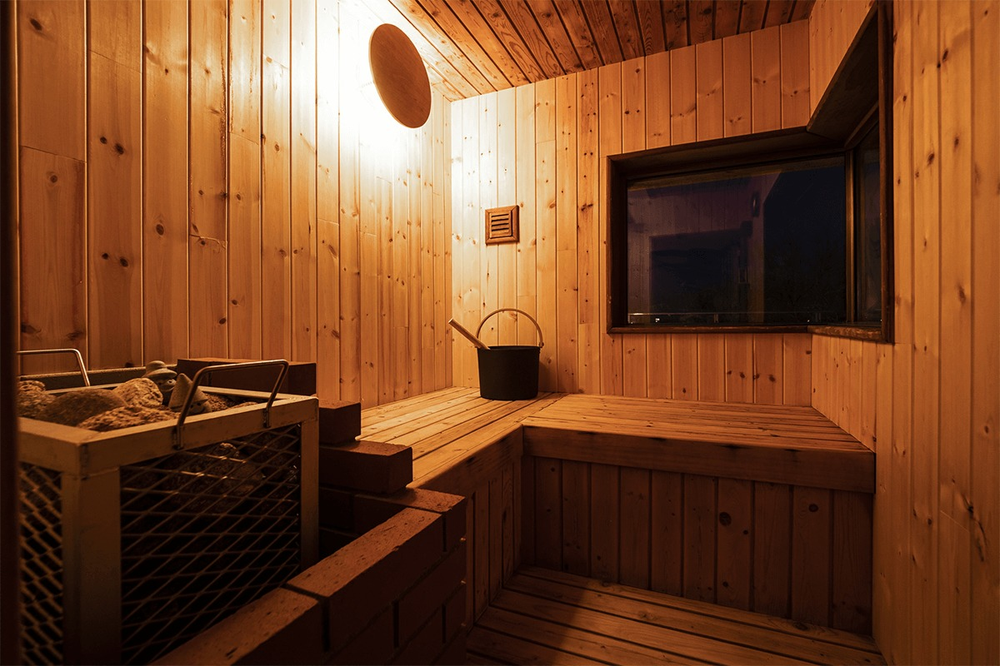
После парилки можно остыть в глубокой купели с холодной водой, а потом отдохнуть на террасе под широким небом Токати, которое здесь чаще всего ясное. Купель достаточно глубокая и служит заодно обычной ванной.
Здесь можно самому плеснуть воды на каменку, чтобы пошёл пар. Влажность получается в меру, дышать легко, и спокойно себя почувствует даже тот, кто сауну не очень любит. В номере есть пять ароматических масел: можно выбрать запах по настроению и добавить его в пар.
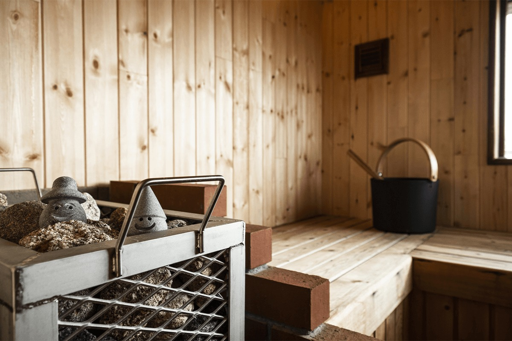
Для гостей этого номера приготовлены напитки, которые трудно найти в продаже: финские коктейли, берёзовый сок и многое другое. Всё это бесплатно.
Онсэн
Мор-онсэн: торфяная вода
Горячий источник отеля считают его главным сокровищем. Мор-онсэн встречается в мире очень редко, и он включён в список «Наследие Хоккайдо». Такой источник получается, когда древние растения, погребённые под землёй, медленно превращаются в уголь. При этом образуются гуминовые и фульвовые кислоты, органические вещества, от которых кожа становится гладкой, и они растворяются в подземной воде.
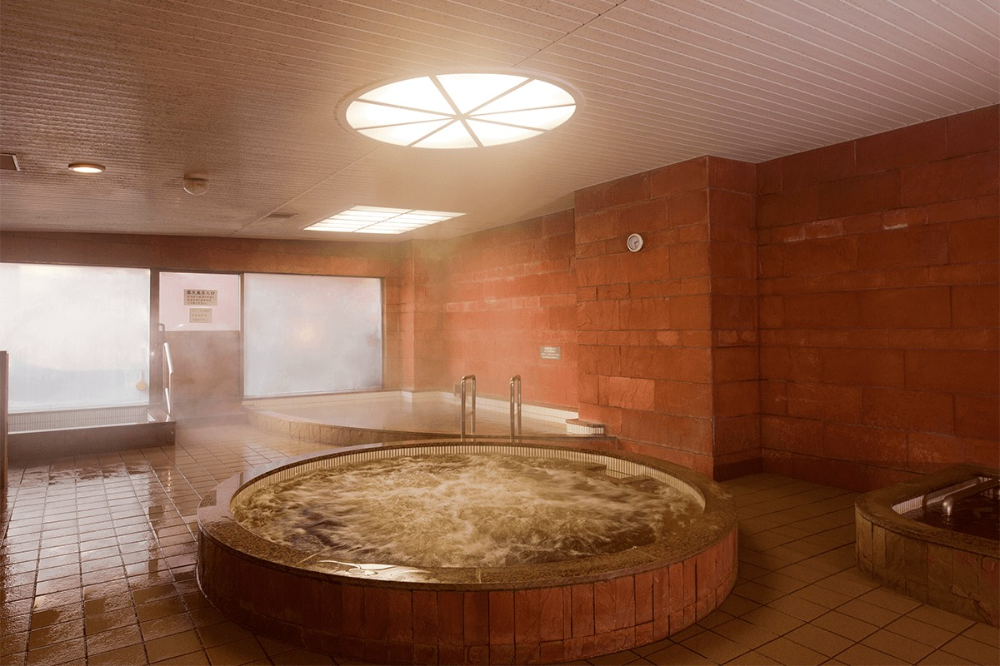
Источник Хоккайдо отеля считается самым насыщенным среди мор-онсэнов округи. Из крана течёт вода источника на все сто процентов, такой, какой её подняли из-под земли. В ней плавают хлопья, похожие на водоросли: это и есть растительные вещества мор-онсэна, признак того, как богата вода.
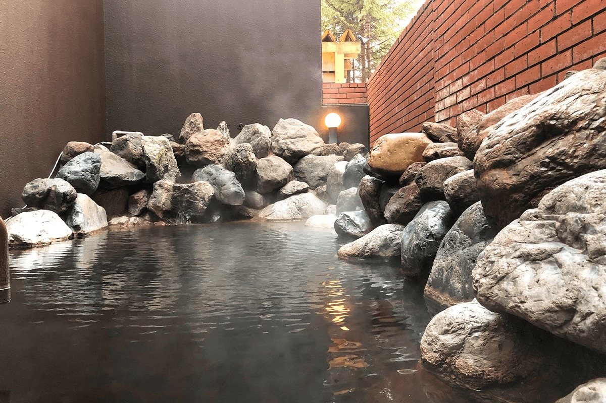
Мор-онсэн это щелочной источник с гуминовыми веществами из торфа и бурого угля. Название пошло от торфяных грязевых ванн, на которые похоже его действие. По составу это натриево-хлоридный и гидрокарбонатный источник, слабощелочной и горячий. Считается, что купание помогает при невралгии, болях в мышцах и суставах, ушибах и растяжениях, хронических болезнях кожи, при усталости и восстановлении после болезни, а также при ожогах и порезах.
Вода для холодной купели тоже особенная. Обихиро пьёт воду из реки Сацунай и других рек, а Сацунай к 2020 году восемь раз признавали самой чистой рекой Японии в проверках, которые проводит Министерство земли, инфраструктуры и транспорта. В купель идёт подрусловая вода этой реки, та же, что течёт в городском водопроводе, и она мягкая для кожи. В мужской купальне рядом с купелью есть отдельный кран: эту воду можно пить.
Сауна
Сауна по-токатийски
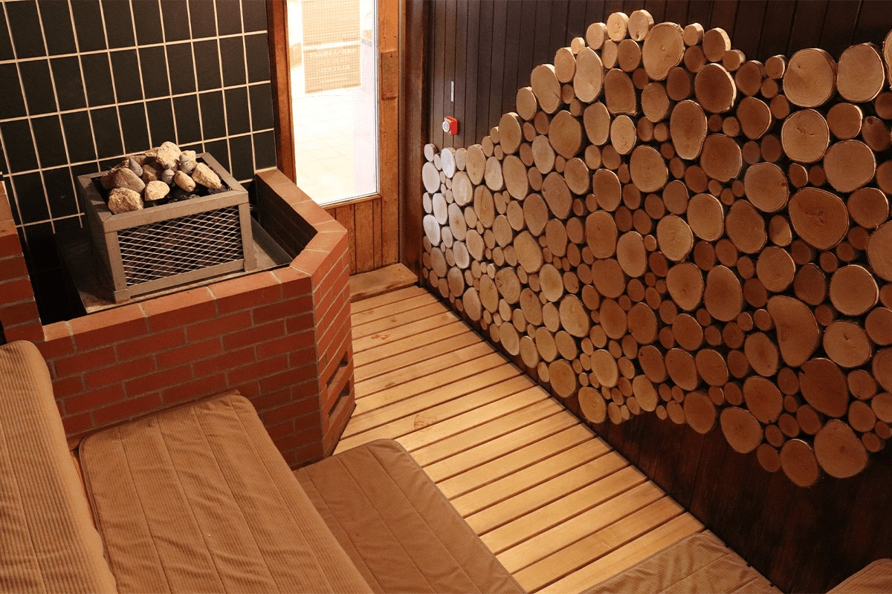
В июне 2019 года отель обновил общую сауну. Здесь первыми в Токати сделали настоящий финский лёйлю, а стену украсили берёзой из Токати, чей запах помогает расслабиться ещё глубже. Отель придумал два своих способа пара, «мо-рю» и «уо-рю», и, по его словам, таких нет больше нигде в мире. Их одобрил профессиональный любитель саун, который парился больше чем в сорока странах.
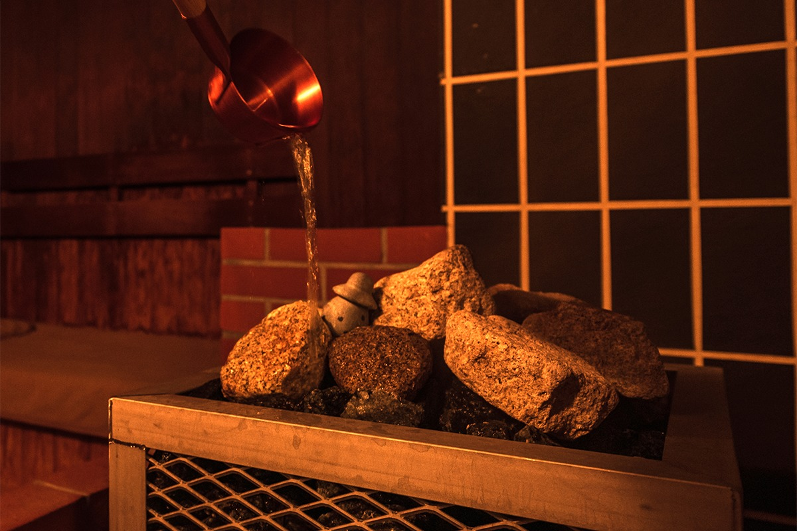
Лёйлю это пар, который поднимается, когда на раскалённые камни сауны льют воду. Считается, что такой пар усиливает потоотделение, помогает обмену веществ, снимает усталость и очищает организм.
«Мо-рю»
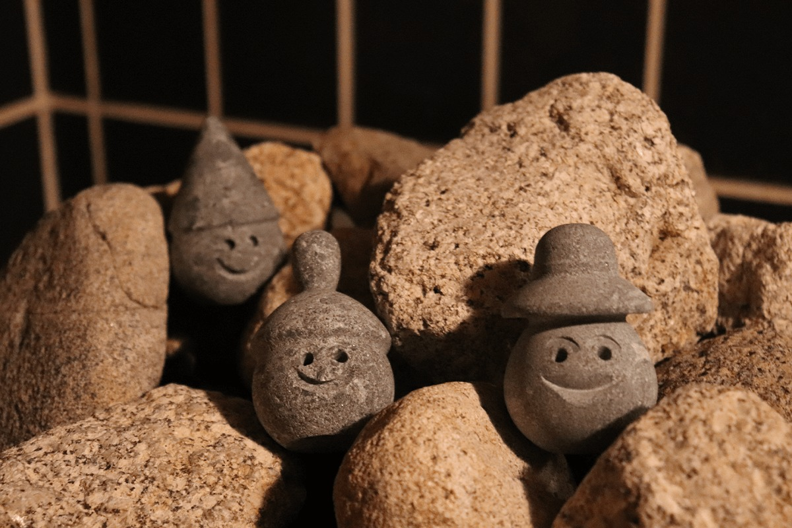
«Мо-рю» это лёйлю с водой мор-онсэна. В ней много органических кислот, которые добавляют даже в лосьоны для лица, и пар от такой воды, возможно, ещё и полезен для кожи.
«Уо-рю»
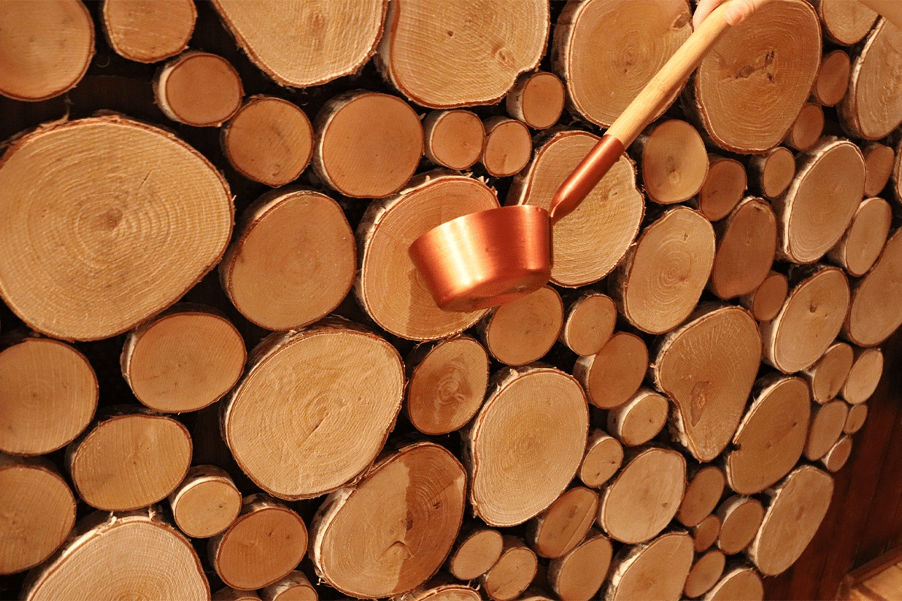
«Уо-рю» назвали от английского «стена»: это лёйлю на стене. Воду мор-онсэна плещут на спилы берёзы, и по сауне расходится мягкий берёзовый аромат.
Хлеб
Uncle Moorsen's: хлеб на воде мор-онсэна
Пекарня Uncle Moorsen's при отеле печёт хлеб вручную из продуктов Токати. Как и подсказывает название, гордость пекарни это хлеб, в тесто которого замешивают воду мор-онсэна. Богатая растительными веществами вода даёт сладкий мягкий аромат и глубокий вкус. Мука и масло, конечно, тоже местные.
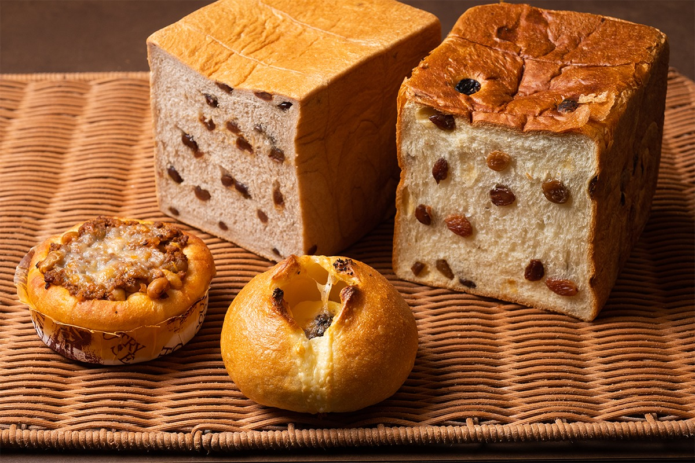
Хлеб с маслом и двумя видами сладкой бобовой пасты из Токати стоил в 2020 году 680 иен за штуку. Мягкий сладковатый хлеб с изюмом, где вода источника есть и в тесте, и в самом изюме, стоил 660 иен. Булочка с домашним мясным соусом из фарша, лука и токатийской сои стоила 264 иены. А в булочке «Дзягарэтто» под тестом на воде мор-онсэна прячется картофель и много сыра раклет, который тоже моют водой источника. Такая булочка стоила 300 иен.
«Мори-но спа ризорт Хоккайдо отель»
- Адрес
- префектура Хоккайдо, Обихиро, Ниси-7-дзё Минами, 19-1
- Телефон
- +81 155-21-0003
- Заезд / выезд
- 15:00 / 11:00
- Цены / Вход
- от 27 000 иен за ночь с ужином и завтраком (налог и сервисный сбор включены)